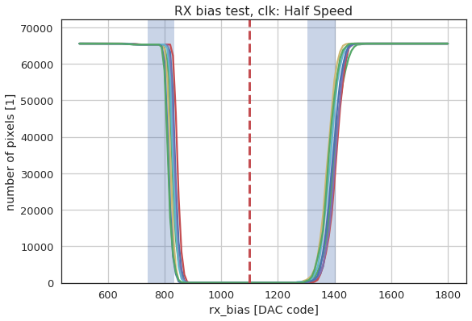

EIGER Tests¶
-
sls_detector_tools.eiger_tests.analog_pulses(name, d, clk=1, N=1000, plot=False)[source]¶ Test the analog side of the pixel using test pulses Normally this test is run only using clock divider 1 It is normal to see cosmics in the final image
-
sls_detector_tools.eiger_tests.counter(name, d, clk=1)[source]¶ Test the digital counter logic. Note this does not test the overflow
Test is done by toggeling enable: 1364 –> 2730 –> 101010101010 682 –> 1366 –> 010101010110
Using enable only increments of 2 in the counter value is possible
-
sls_detector_tools.eiger_tests.generate_report(path)[source]¶ Generate a report based on the contents in a folder outputs a multipage pdf file
-
sls_detector_tools.eiger_tests.io_delay(detector, clk='Full Speed', npulse=-1, plot=False)[source]¶ Test to determine the settings for iodelay npulses = -1 makes the test using a normal readout npulses = 0 puts the threshold on the far side of noise
but does not pulsenpulse > 0 pulses using enable
-
sls_detector_tools.eiger_tests.overflow(name, d, clk=1)[source]¶ Overflow test using analog pulses
Unfortunatley the enable toggling cannot be used to check this because of problems when going to overflow
-
sls_detector_tools.eiger_tests.rx_bias(detector, clk='Full Speed', npulse=1)[source]¶ Scans rx bias and checks for each value if the data is read out correctly. Uses testing with enable to load counter values. Default number of pulses is 1. Probe station testing uses 721 pulses 721 (1444 counter value)
